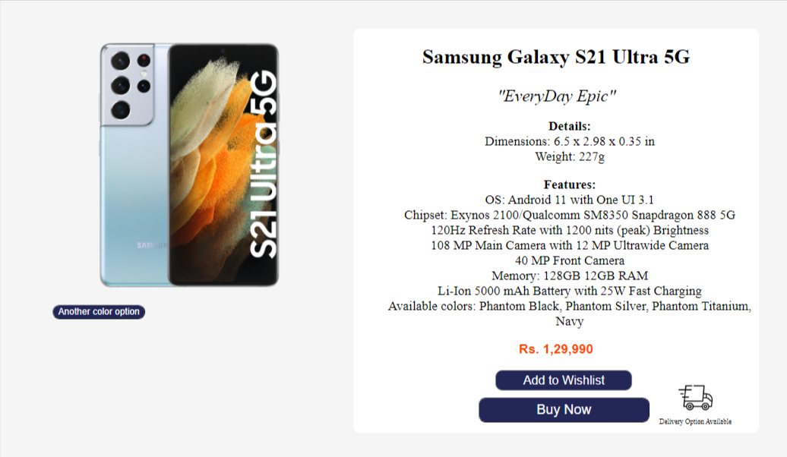
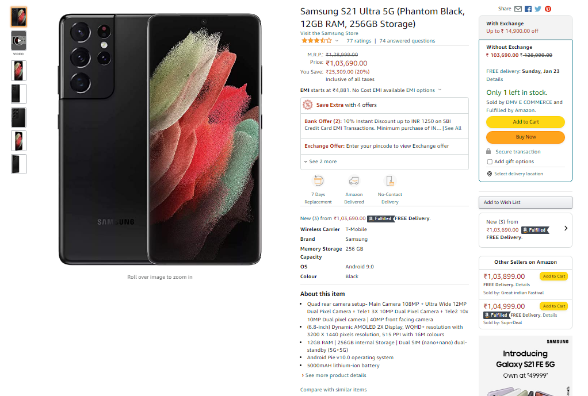
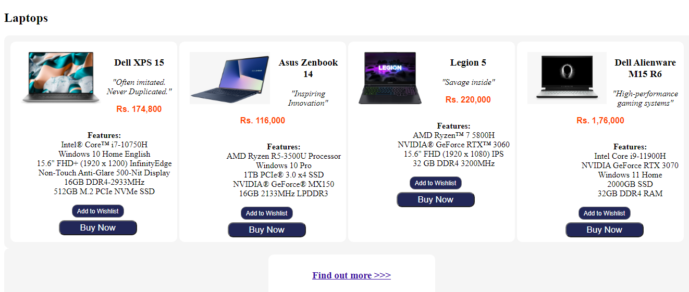
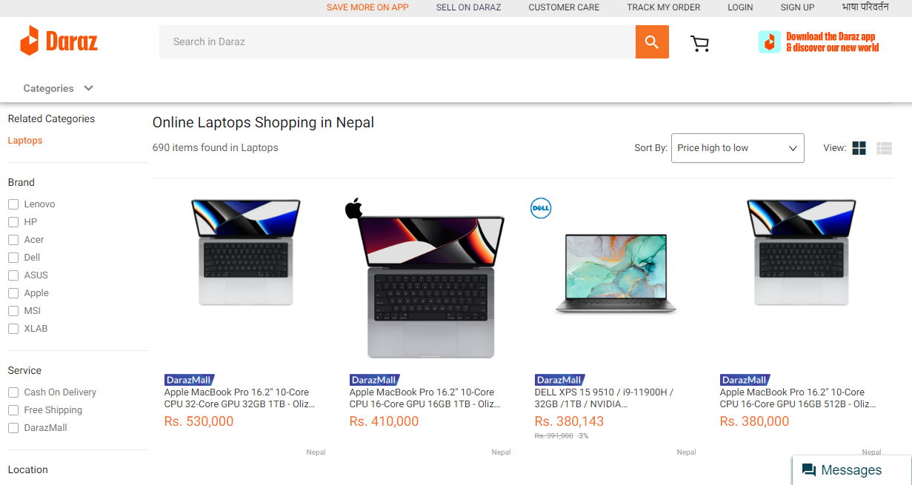
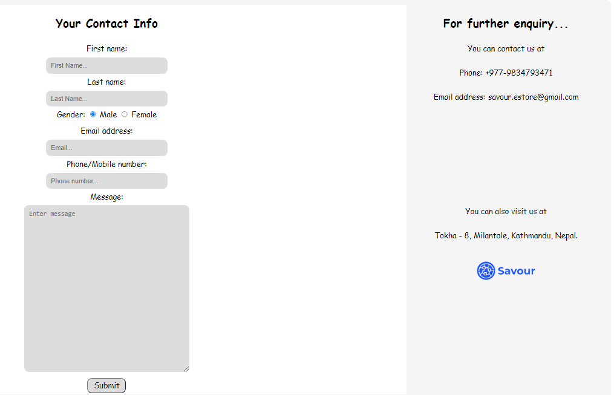
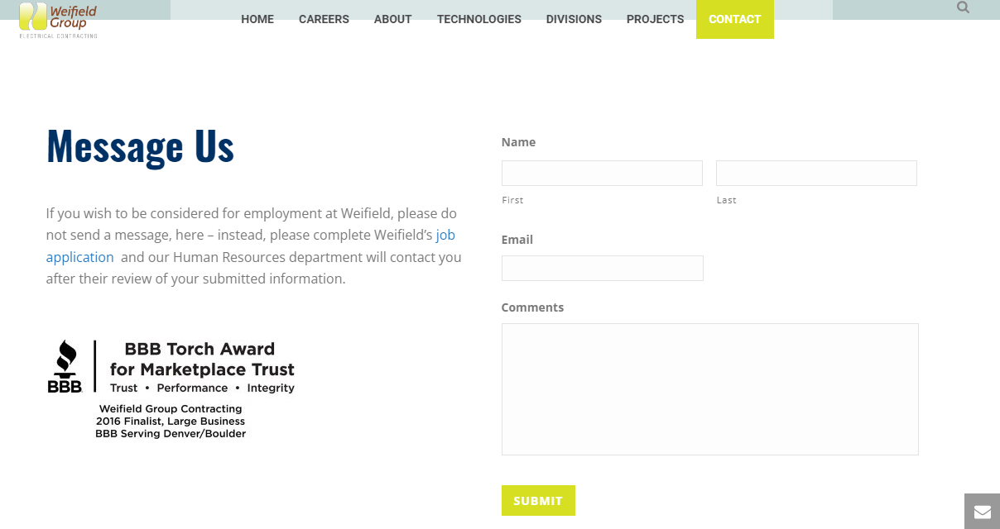
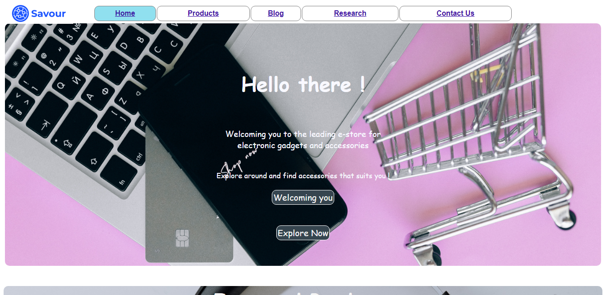
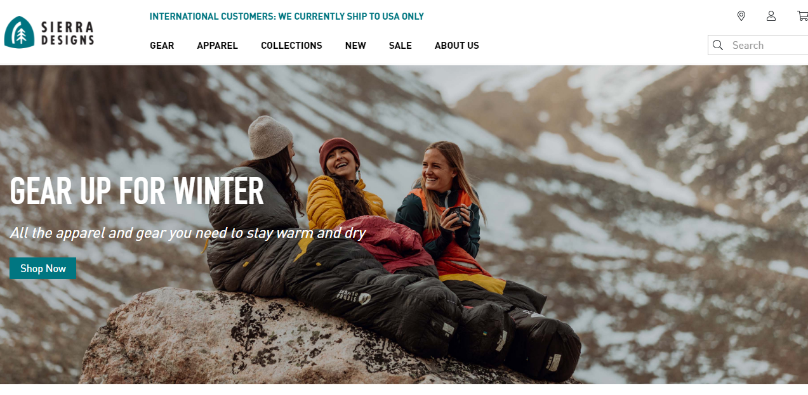
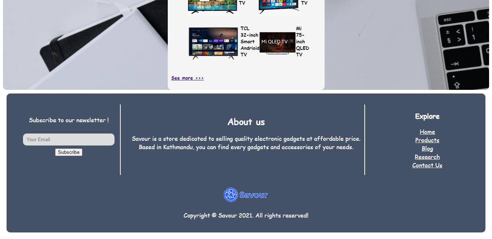
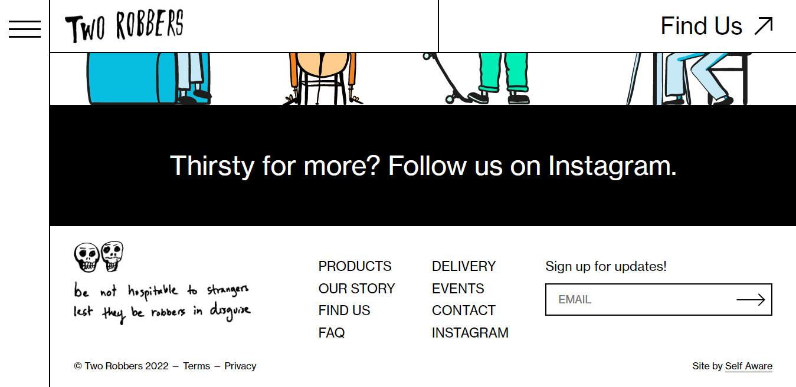

Webpage/Section for the assignment

Featured Product section of Products page (Source)
Reference webpage/section

Details section of a product of Amazon (Source)
While making the above section for the Products page, reference is taken from the particular product details section of Amazon website. This section is present in Products page of electronic gadgets' store. The reference page can be accessed by clicking on any product on the website.
Just like in the reference website, a image of the product is inserted for providing visual properties regarding the product. Also the name of the product is highlighted using <h2> tag. Buttons for buying the product and adding that into wishlist are added. A section for details regarding the products is also created as like in reference website. For providing information about delivery option, a icon is also inserted. An option for changing the image is also added in the section just like in reference website.
But instead of changing into different images displayed in left column like in reference page, a button is used in the Products page. This button changes the image when clicked. Along with that, tagline of the product is also added with emphasizing it using <em> tag. A section for ratings is not added. Along with that, different sections regarding discounts, delivery information, price comparison and extra details are also not added. A section for advertisement is not included which is present in reference website.
For inserting the image in the section, <img> is used and it is styled by using different CSS property. Both the image section and its details section are structured by using flex property. Details regarding the products are listed using <ul> and <li> tags and are styled using CSS. External, internal as well as inline CSS have been used.
Webpage/Section for the assignment

Product section for Laptops of Products page (Source)
Reference webpage/section

Products section page of Daraz website (Source)
For making this section of Products page, products section of Laptop categories of Daraz website is taken as reference. This section is within the Products page. The reference page can be accessed by clicking on any product categories.
Just like in reference website, the section comprises of images of products with their name and details. In this section of Products page, name of the products are highlighted using header tag. Along with that, taglines of the manufacturing companies are emphasized. In both pages, price of the products have been highlighted using different text color. White background image has been used in both sections. Details regarding the products are also included in electronic gadgets' store website as like in reference page.
The page from reference website also comprises of functionality to navigate and sort by the name of brands which is not present in my webpage. Other functionalities such as sorting out by price, view modes etc are not present in the Products webpage. As search bar is not present in Products page, there is no functionality to search the products.
The section where different products with their details are included is made using flex property. Using flex box, each products has been in seperate divisions. <img> tag is used for including the products' images and are styled using differnt CSS property such as height, margin, padding and so on. For styling the texts <h3>, <p> tags are used. <div> is used for specifying the divisions and these different tags are assigned different class and are styled using CSS. Buttons are made by using <button> tag.
Webpage/Section for the assignment

Contact Page of the website (Source)
Reference webpage/section

Contact page of reference website (Source)
While making the contact page, contact page of Weifield Group's website is taken as reference. The contact page comprises of section with background image with text over it and a section which comprises of a form and details of the electronic gadgets' store along with footer section. The contact page of the reference website can be viewed through navigation bar.
Both the webpages comprises of a section for a form where the users can submit their names, emails and other details. In the contact page of the electronic gadgets' store, users can also submit their phone number. This form is used as a complaint and enquiry form where users can submit their issues in message box. In details section, details regarding store are included along with logo of the store. In reference page, address of the organization is included in that section along with a award given to the organization.
For distinguishing these sections, flex property is used in CSS. In one flex box, where form is to be submitted, <form> tag is used in HTML document. Inside <form> tag, input tag is used for input box with their titles as First Name, Email etc. <textarea> tag is used along with rows and cols attributes for text box. Internal, External as well as Inline CSS is used for styling. In another flex, <p> tag is used for displaying details and <img> tag is used for adding the logo. <br> tag is also used for line break. For validating the form, a function is also created in JavaScript
Webpage/Section for the assignment

Home Page of the website (Source)
Reference webpage/section

Home page of reference website (Source)
While making the home page, home page of Sierra Designs's website is taken as reference. The home page comprises of section with background image with text over it and a section which comprises of different products that are sold in the store. Both the home pages are can be accessed immediately after websites are opened.
Both the homepages comprise of navigation bar with the stores' logo on the left side. Navigation bar of the reference home page also has functionalities to search products, sign in user's account, view dealer's location etc. The navigation bar of the electronic gadgets' store does not have such functionalities.
Both home pages have a background image with text over it and background image do not cover navigation bars. Both background images have theme relating to their store. Along with the text, button is also present in both home pages from which products page can be accessed. Reference home page has "Shop Now" as a button and electronic gadgets' store homepage has "Explore Now" as the button. Additionally, a button with "Welcoming you" is also added in store's home page which changes the text content over the background image.
For making navigation bar in the home page of store's website, <nav> tag is used with <table> tag. Each link is written inside the single row using <tr>. For adding logo, <img> tag is used. Background image is added by using backgroundimage property in external CSS file and it is styled using different attributes. Text are also styled using <h1> and <p> tag with attributes. Buttons are made using <button> tag with <a> tag for linking to Products page.
Webpage/Section for the assignment

Footer section of the website (Source)
Reference webpage/section

Footer section of reference website (Source)
While making the footer section, footer section of Two Robbers's website is taken as reference. The footer section comprises of a section styled by flex box property where three separate divisions are created including Newsletter, About us and Explore. This footer is developed for all webpages. In reference website, Sign Up section along with different links and logo are present.
The links in footer section of webpages developed for electronic gadgets' store leads to different webpages including Home, Products, Blog , Research and Contact Us. Similarily, in reference websites, the links opens different pages including Products, Contact, FAQ etc. Logo of the respective stores are present in both footers of websites.
In footer section of electronic gadgets' store, border lines are added for separating the divisions which are not present in reference website. In reference website, links named as Terms and Privacy leads to different webpages which are not created for the assignment.
These three divisions are styled by using flex property along with margin and padding. <input> tag is used for taking input in newsletter section. border-right property is used in external CSS file using class for adding the separation lines. <h1>, <h3>, <p> is used for structuring the text and styling it. <ul> with <li> tags are used for listing links created by using <a> tag. <img> tag is used for adding logo in the footer section.